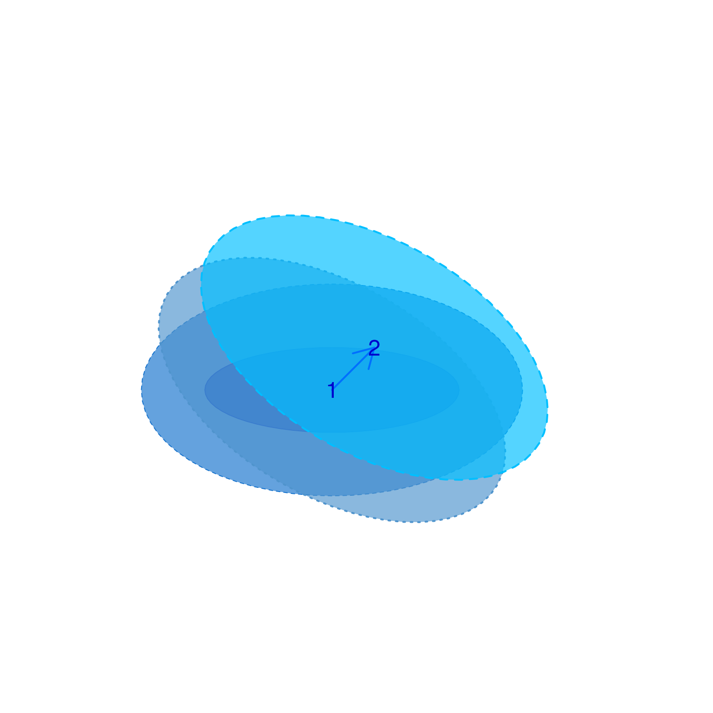
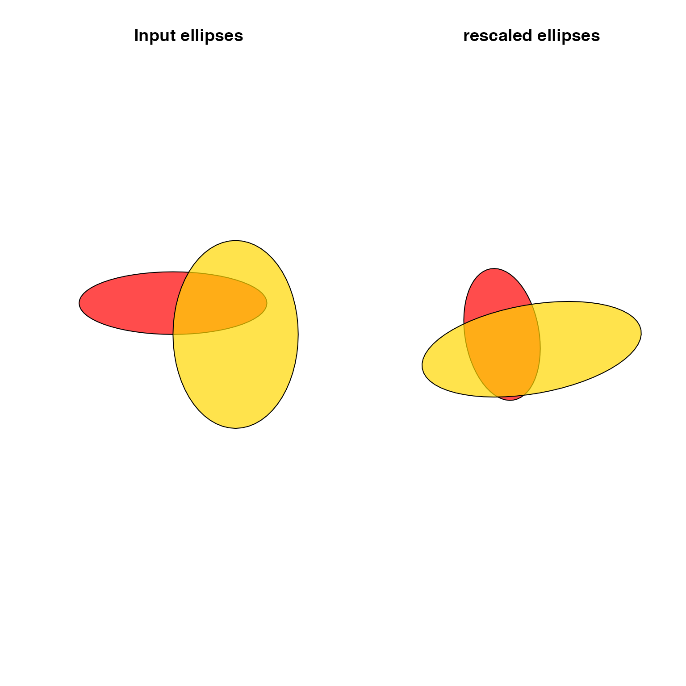
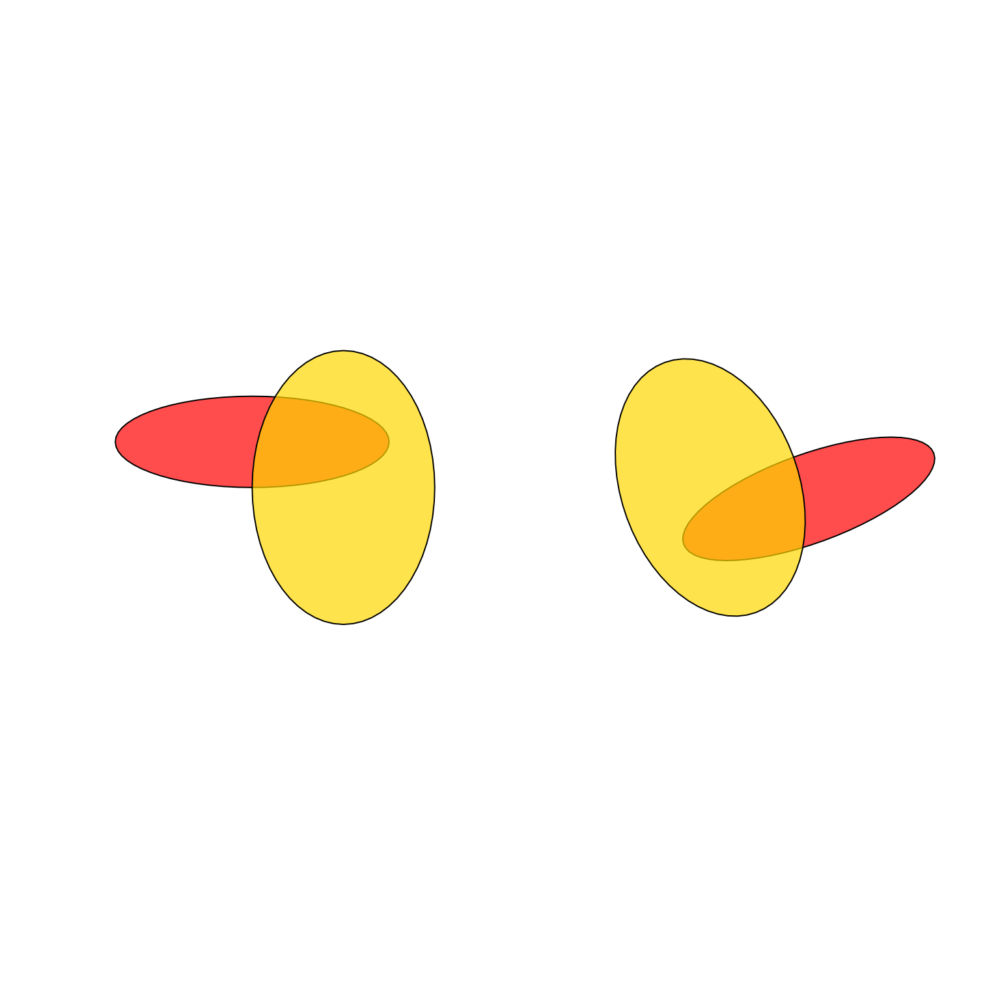

Scale, rotate, and shift numeric coordinates
rescale_coordinates( x, scale = c(1, 1), rotate_degrees = 0, shift = c(0, 0), center = NULL, rotation_axes = c(1, 2), plot_debug = FALSE, ... )
Arguments
| x |
|
|---|---|
| scale |
|
| rotate_degrees |
|
| shift |
|
| center |
|
| rotation_axes |
|
| plot_debug |
|
| ... | additional arguments are ignored. |
Value
matrix with numeric values after processing.
Details
This function takes a numeric matrix with two or more numeric columns, and adjusts the coordinates in three ways:
scale: adjust coordinate range by a multiplier, relative to a central point
rotate: rotate coordinates around a central point in degrees
shift: adjust coordinate range by adding a numeric value
The operations are performed in that order: rotate, scale, shift.
When center is not defined, the default behavior is to use
the mean of the range of each coordinate column. Using the mean
range is equivalent to using the mean of the bounding box sp::bbox()
for Spatial objects.
See also
Other venndir spatial:
degrees_to_adj(),
diff_degrees(),
display_angles(),
get_largest_polygon(),
get_sp_buffer(),
intersect_polygons(),
mean_degree_arc(),
mean_degrees(),
nudge_sp(),
rescale_sp(),
sp_circles(),
sp_ellipses(),
spread_degrees(),
union_polygons()
Examples
sp <- sp_ellipses(xcenter=2, ycenter=3, xradius=3, yradius=1); plot(sp, col="#FF000077", border="#FF0000");x <- sp@polygons[[1]]@Polygons[[1]]@coords; jamba::nullPlot(doBoxes=FALSE, xlim=c(-3, 9), ylim=c(-2, 10), asp=1);xnew <- rescale_coordinates(x, shift=c(1, 1), rotate_degrees=30, scale=c(1.5, 2.5), plot_debug=TRUE)# example using SpatialPolygons sp <- sp_ellipses(xcenter=c(2, 4), ycenter=c(3, 2), xradius=c(3, 2), yradius=c(1, 3)); # apply rescale to each polygon sp_2 <- rescale_sp(sp, shift=c(1, 1), rotate_degrees=80, scale=c(1.5, 2.5)) par("mfrow"=c(1,2)); plot(sp, asp=1, col=jamba::alpha2col(alpha=0.7, c("red", "gold")), main="Input ellipses"); plot(sp_2, asp=1, col=jamba::alpha2col(alpha=0.7, c("red", "gold")), main="rescaled ellipses");par("mfrow"=c(1,1)); # same as before but apply 180 degree rotation sp_3 <- rescale_sp(sp, shift=c(1, 1), rotate_degrees=160, scale=c(1, 1), share_center=TRUE) par("mfrow"=c(1,2)); plot(sp, asp=1, col=jamba::alpha2col(alpha=0.7, c("red", "gold"))); plot(sp_3, asp=1, col=jamba::alpha2col(alpha=0.7, c("red", "gold")));